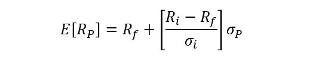
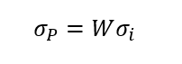
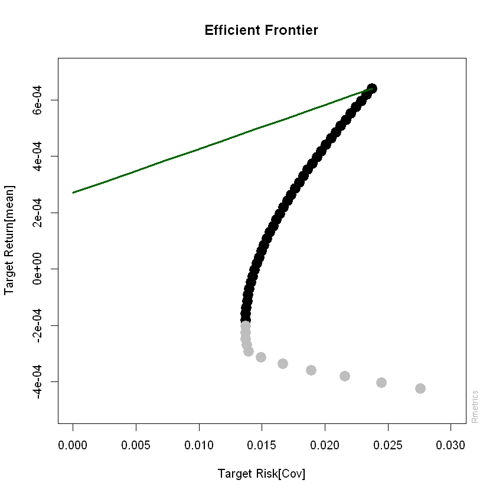
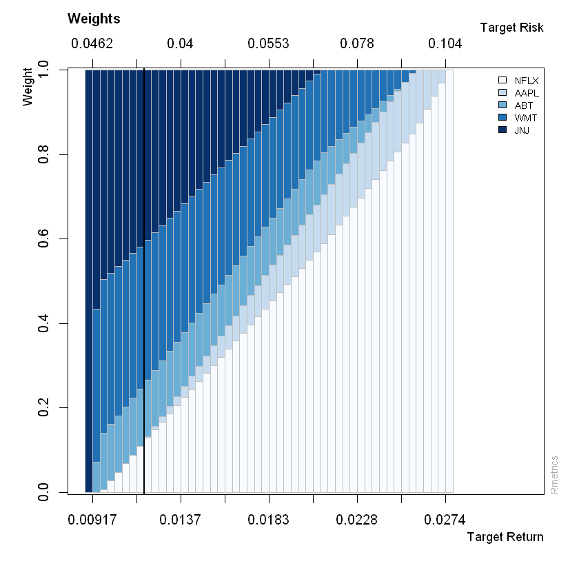

Línea de Mercado de Capitales (CML)¶
Importar datos¶
datos = read.csv("Cuatro acciones 2020.csv", sep=";", dec=",", header = T)
head(datos)
tail(datos)
| Fecha | ECO | PFAVAL | ISA | NUTRESA | |
|---|---|---|---|---|---|
| <fct> | <int> | <int> | <int> | <int> | |
| 1 | 26/03/2018 | 2775 | 1165 | 13080 | 25720 |
| 2 | 27/03/2018 | 2645 | 1155 | 13080 | 25700 |
| 3 | 28/03/2018 | 2615 | 1165 | 13320 | 25980 |
| 4 | 2/04/2018 | 2690 | 1165 | 13420 | 25920 |
| 5 | 3/04/2018 | 2730 | 1175 | 13660 | 25920 |
| 6 | 4/04/2018 | 2740 | 1190 | 13560 | 25840 |
| Fecha | ECO | PFAVAL | ISA | NUTRESA | |
|---|---|---|---|---|---|
| <fct> | <int> | <int> | <int> | <int> | |
| 495 | 3/04/2020 | 2270 | 906 | 15500 | 19700 |
| 496 | 6/04/2020 | 2260 | 955 | 16140 | 19720 |
| 497 | 7/04/2020 | 2230 | 932 | 16680 | 20020 |
| 498 | 8/04/2020 | 2360 | 936 | 17200 | 20700 |
| 499 | 13/04/2020 | 2250 | 951 | 17860 | 21300 |
| 500 | 14/04/2020 | 2220 | 955 | 18000 | 22500 |
Matriz de precios¶
precios = datos[,-1]
precios = ts(precios)
Matriz de rendimientos.¶
rendimientos = diff(log(precios))
rendimientos_esperados = apply(rendimientos, 2, mean)
print(rendimientos_esperados)
ECO PFAVAL ISA NUTRESA
-0.0004471815 -0.0003983267 0.0006398545 -0.0002680433
Frontera eficiente de Markowitz¶
library(fPortfolio)
frontera = portfolioFrontier(as.timeSeries(rendimientos), constraints = "longOnly")
Gráfico de la frontera eficiente¶
frontierPlot(frontera, cex = 2, pch = 19)
monteCarloPoints(frontera, col = "blue", mcSteps = 500, cex = 0.5, pch = 19)
minvariancePoints(frontera, col = "darkred", pch = 19, cex = 2)
equalWeightsPoints(frontera, col = "darkgreen", pch = 19, cex = 2)

Gráficos de proporciones de los portafolios de la frontera¶
colores = qualiPalette(ncol(rendimientos), "Dark2") # Paleta de colores
weightsPlot(frontera, col = colores)

Proporciones de inversión de la frontera¶
Media-varianza de la frontera¶
media_varianza_frontera = frontierPoints(frontera)
print(media_varianza_frontera)
targetRisk targetReturn
1 0.02757505 -4.249971e-04
2 0.02448843 -4.028126e-04
3 0.02157674 -3.806282e-04
4 0.01892091 -3.584438e-04
5 0.01664388 -3.362594e-04
6 0.01492009 -3.140750e-04
7 0.01395607 -2.918906e-04
8 0.01378202 -2.697062e-04
9 0.01373305 -2.475218e-04
10 0.01370275 -2.253374e-04
11 0.01369124 -2.031530e-04
12 0.01369858 -1.809686e-04
13 0.01372472 -1.587842e-04
14 0.01376957 -1.365998e-04
15 0.01383294 -1.144153e-04
16 0.01391457 -9.223094e-05
17 0.01401416 -7.004653e-05
18 0.01413131 -4.786212e-05
19 0.01426560 -2.567771e-05
20 0.01441655 -3.493303e-06
21 0.01458364 1.869111e-05
22 0.01476633 4.087551e-05
23 0.01496403 6.305992e-05
24 0.01517617 8.524433e-05
25 0.01540214 1.074287e-04
26 0.01564136 1.296131e-04
27 0.01589321 1.517976e-04
28 0.01615712 1.739820e-04
29 0.01643250 1.961664e-04
30 0.01671909 2.183508e-04
31 0.01701648 2.405352e-04
32 0.01732437 2.627196e-04
33 0.01764230 2.849040e-04
34 0.01796974 3.070884e-04
35 0.01830617 3.292728e-04
36 0.01865112 3.514572e-04
37 0.01900411 3.736416e-04
38 0.01936471 3.958260e-04
39 0.01973250 4.180105e-04
40 0.02010709 4.401949e-04
41 0.02048810 4.623793e-04
42 0.02087518 4.845637e-04
43 0.02126800 5.067481e-04
44 0.02166625 5.289325e-04
45 0.02206963 5.511169e-04
46 0.02247787 5.733013e-04
47 0.02289070 5.954857e-04
48 0.02330789 6.176701e-04
49 0.02372920 6.398545e-04
attr(,"control")
targetRisk targetReturn auto
"Cov" "mean" "TRUE"
Ratio de Sharpe¶
2¶
Rf = 0.00027 #Continua diaria
Los rendimientos esperados de los portafolios de la frontera están en la
segunda columna de media_varianza_frontera y en la primera columna
están las volatilidades.
sharpe = (media_varianza_frontera[,2] - Rf)/media_varianza_frontera[,1]
print(sharpe)
1 2 3 4 5
-0.0252038370 -0.0274747138 -0.0301541465 -0.0332142462 -0.0364253736
6 7 8 9 10
-0.0391468953 -0.0402613812 -0.0391601808 -0.0376844124 -0.0361487645
11 12 13 14 15
-0.0345588085 -0.0329208376 -0.0312417430 -0.0295288700 -0.0277898602
16 17 18 19 20
-0.0260324882 -0.0242644998 -0.0224934602 -0.0207266168 -0.0189707828
21 22 23 24 25
-0.0172322441 -0.0155166898 -0.0138291688 -0.0121740670 -0.0105551068
26 27 28 29 30
-0.0089753628 -0.0074372913 -0.0059427708 -0.0044931466 -0.0030892363
31 32 33 34 35
-0.0017315462 -0.0004202408 0.0008447881 0.0020639375 0.0032378600
36 37 38 39 40
0.0043674180 0.0054536428 0.0064976975 0.0075008451 0.0084644204
41 42 43 44 45
0.0093898057 0.0102784112 0.0111316575 0.0119509621 0.0127377273
46 47 48 49
0.0134933320 0.0142191236 0.0149164132 0.0155864710
Portafolio de la frontera con mayor ratio de Sharpe.
max(sharpe)
El último portafolio de la frontera tiene el mayor ratio de Sharpe.
portafolio_sharpe = tail(media_varianza_frontera, 1)
print(portafolio_sharpe)
targetRisk targetReturn
49 0.0237292 0.0006398545
El portafolio con el mayor ratio de Sharpe tiene un rendimiento esperado diario de 0,064% y volatilidad diaria de 2,37%.
CML¶

3¶

4¶
Se conformarán portafolios de inversión con un activo libre de riesgo y los portafolios de la frontera.
Con la función sep creará un vector de proporciones empezando en 0
hasta 1, con saltos de 0,05.
proporciones_activo_riesgoso = seq(0, 1, 0.05)
proporciones_activo_riesgoso
- 0
- 0.05
- 0.1
- 0.15
- 0.2
- 0.25
- 0.3
- 0.35
- 0.4
- 0.45
- 0.5
- 0.55
- 0.6
- 0.65
- 0.7
- 0.75
- 0.8
- 0.85
- 0.9
- 0.95
- 1
CML = Rf + (portafolio_sharpe[2] - Rf)/(portafolio_sharpe[1])*proporciones_activo_riesgoso*portafolio_sharpe[1]
print(CML)
[1] 0.0002700000 0.0002884927 0.0003069855 0.0003254782 0.0003439709
[6] 0.0003624636 0.0003809564 0.0003994491 0.0004179418 0.0004364345
[11] 0.0004549273 0.0004734200 0.0004919127 0.0005104054 0.0005288982
[16] 0.0005473909 0.0005658836 0.0005843763 0.0006028691 0.0006213618
[21] 0.0006398545
frontierPlot(frontera, cex = 2, pch = 19, xlim = c(0, 0.03), ylim = c(-0.0005, 0.0007))
lines(proporciones_activo_riesgoso*portafolio_sharpe[1], CML, col = "darkgreen", lwd = 3)
{kind=link}

CML también se puede graficar con la librería fPortfolio.
Primero se debe indicar la tasa libre de riesgo en las especificaciones
de la librería portfolioSpec().
Rf = 0.00027.
especificaciones = portfolioSpec()
`setRiskFreeRate<-`(especificaciones, Rf)
Model List:
Type: MV
Optimize: minRisk
Estimator: covEstimator
Params: alpha = 0.05
Portfolio List:
Target Weights: NULL
Target Return: NULL
Target Risk: NULL
Risk-Free Rate: 0.00027
Number of Frontier Points: 50
Optim List:
Solver: solveRquadprog
Objective: portfolioObjective portfolioReturn portfolioRisk
Options: meq = 2
Trace: FALSE
frontera = portfolioFrontier(as.timeSeries(rendimientos), constraints = "longOnly", spec = especificaciones)
La línea CML se grafica con tangencyLines y el punto tangencial con
tangencyPoints.
frontierPlot(frontera, cex = 2, pch = 19)
monteCarloPoints(frontera, col = "blue", mcSteps = 500, cex = 0.5, pch = 19)
minvariancePoints(frontera, col = "darkred", pch = 19, cex = 2)
equalWeightsPoints(frontera, col = "darkgreen", pch = 19, cex = 2)
tangencyLines(frontera)
tangencyPoints(frontera, col = "green", cex = 2, pch = 19)
{kind=link}

Portafolio tangente¶
portafolio_tangente = tangencyPortfolio(as.timeSeries(rendimientos), spec = especificaciones, constraints = "LongOnly")
portafolio_tangente
Title:
MV Tangency Portfolio
Estimator: covEstimator
Solver: solveRquadprog
Optimize: minRisk
Constraints: LongOnly
Portfolio Weights:
ECO PFAVAL ISA NUTRESA
0 0 1 0
Covariance Risk Budgets:
ECO PFAVAL ISA NUTRESA
0 0 1 0
Target Returns and Risks:
mean Cov CVaR VaR
0.0006 0.0237 0.0531 0.0314
Description:
Sun May 31 20:31:29 2020 by user: migue